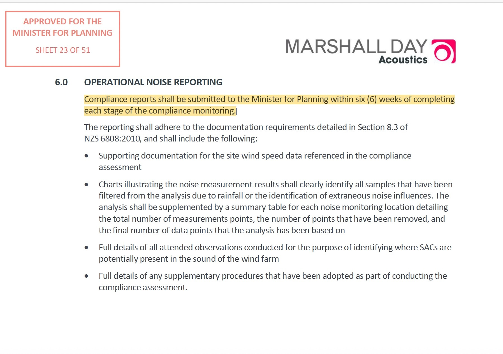

Noise Compliance Testing Plan
The Noise Compliance Testing Plan (NCTP) is the endorsed methodology required under the Planning Permit for the post-construction assessment of operational wind farm noise. It establishes the mandatory assessment framework against which post-construction compliance monitoring and reporting are undertaken.
Why the NCTP was considered important
During the Public Information Session, SLR acoustician Gustaf Reutersward explained that the Noise Compliance Testing Plan establishes the methodology used for post-construction compliance assessment. His explanation reinforces the central role of the NCTP within the assessment framework presented throughout this record.
Readers can also refer to the Public Information Session video and transcript for the discussion describing the role of the NCTP in the assessment process.
Why the NCTP matters
The NCTP was approved as part of the permit framework. It records how operational wind farm noise was to be measured, assessed and reported. For this record, the NCTP is read as the practical method by which the planning permit and NZS 6808 framework were to be applied.
Requirement
The NCTP identifies locations, data requirements, operational measurement rules, special audible characteristic procedures and reporting steps.
Record
Later technical reports and agency records are read against the NCTP to ask whether the required pathway can be followed from the disclosed documents.
Verification
The NCTP is central to the Documentary Verification method because it connects mandatory requirements to the source record.
Where the NCTP sits in the governing hierarchy
The NCTP does not sit alone. It is part of the same pathway used across this record.
Read the NCTP with the pre-construction assessments
The NCTP is the endorsed post-construction compliance methodology. The earlier planning-stage and pre-construction acoustic assessments explain the predictive and background material that preceded the operational testing pathway.
NCTP requirements highlighted
Where the approved NCTP uses mandatory language, this record preserves that language and asks whether the later disclosed record enables independent reconciliation.
| Area | Mandatory pathway | Documentary question |
|---|---|---|
| K15aa | The NCTP records the need for an updated K15aa background report before operation. | Background sound, receiver-group methodology and agency custody. |
| Measurement locations | Operational measurements are tied to preferred receiver locations, subject to access and the approved methodology. | Whether the later record can be traced back to the required locations and reference methodology. |
| Measurement position | Measurements are read against receiver / dwelling proximity requirements and continuity with background monitoring locations. | Continuity between pre-construction monitoring and operational assessment. |
| Acoustic and wind data | The NCTP specifies the acoustic and synchronised wind data needed for assessment. | Whether the disclosed record allows the compliance dataset to be independently followed. |
| Special Audible Characteristics | The NCTP contains mandatory procedures for identifying, observing and assessing Special Audible Characteristics (SAC) during post-construction compliance assessments. | Attended observations, monitoring periods, reporting and evidentiary completeness. |
| Reporting | Reporting requirements form part of the approved documentary pathway. | What was reported, when it was reported, and what agency custody record exists. |
Monitoring duration and mandatory reporting
During the SLR Public Information Session – Methodology explanation (commencing at 44:30), Gustaf Reutersward explained that post-construction monitoring campaigns may extend over an extended period because sufficient valid data must be obtained under representative operating and environmental conditions before the assessment can be completed. He also explained that attended listening observations form the "gateway" to further objective analysis.
The approved Noise Compliance Testing Plan (NCTP) separately establishes the mandatory reporting requirement that follows completion of each stage of compliance monitoring.

The NCTP is used as a verification map
The record does not use the NCTP to make its own compliance finding. It uses the NCTP to identify the required steps and then asks whether those steps can be followed in the disclosed record.
Primary documents and further reading
This page is a guide. The detailed record remains in the executed documents and source material.
Agency Records
The record includes a public gateway to the documentary records of EPA Victoria, the Department of Transport and Planning, Moorabool Shire Council and the Australian Energy Infrastructure Commissioner. Agency pages present the correspondence, Freedom of Information material and source documents currently available within the record.
NCTP and October 2022 NMP measurement locations
The endorsed NCTP identifies six preferred operational measurement locations: H18aa, K15aa, K34aa, L18aa, M29aa and N31ab. The October 2022 NMP identifies H18aa, K15aa and L18aa as preferred compliance measurement locations. The NMP separately states that the NCTP takes precedence where a conflict exists.